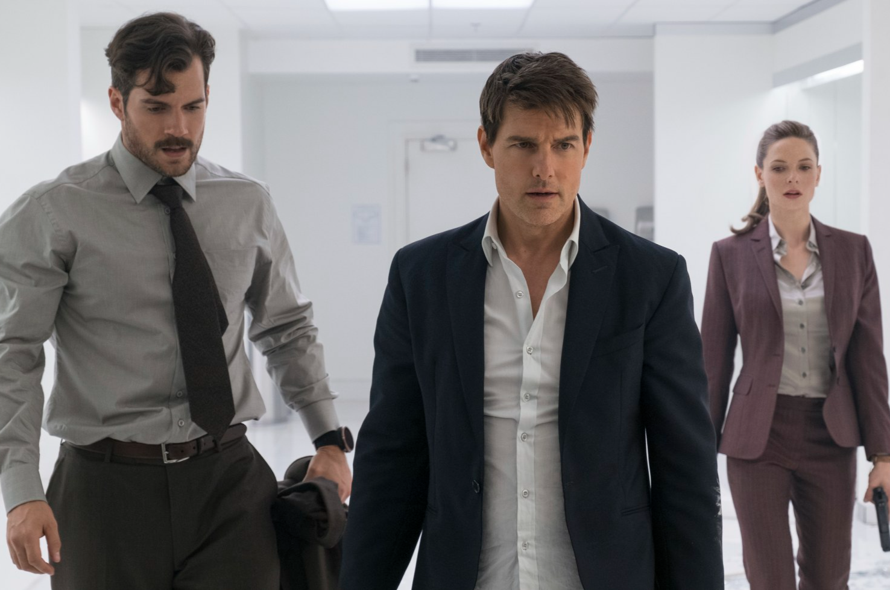

Kenzo Sutarwan - Minggu, 27 Agustus 2023
At the beginning of the film, Solomon Lane, one of the agents of the syndicate, namely the terrorist organization, has been reorganized into the terrorist group known as The Apostles, after implementing a "terror for hire" policy. They are hired by an extremist known as John Lark and attempt to obtain three stolen plutonium cores for use in three nuclear bombs. IMF agent Ethan Hunt is assigned to secure the plutonium. During a mission in Berlin, terrorist agents of The Apostles take one of Ethan Hunt's team hostage, namely Luther. Ethan chooses to spare Luther, allowing the terrorists of The Apostles to steal his core. The IMF team then arrests Norwegian nuclear weapons expert Nils Delbruuk, whom the CIA believes is building nuclear weapons for Lark.
Enraged at the IMF's failure to secure the plutonium, CIA Director Erika Sloane instructs Special Activities Division Agent August Walker to accompany Ethan on a mission to retrieve it. Ethan and Walker infiltrate a Paris nightclub where Lark is supposed to be buying plutonium from the terrorists of The Apostles, with arms dealer Alanna Mitsopolis acting as middleman. They track down a man they suspect to be Lark, but after a violent fight in the men's room, he is killed by MI6 agent Ilsa Faust. Ethan assumes the Lark identity and meets with Mitsopolis, but the meeting is interrupted when assassins attack the meeting. In exchange for the plutonium, Mitsopolis tasks Ethan with extracting Lane from an armored convoy moving through Paris, and provides one of the cores as an advance.
Ethan and Walker first attack the convoy to prevent Mitsopolis' brother Zola and his men from killing the local police. They lead the police, Mitsopolis' men, and Faust in pursuit while Benji and Luther secure Lane. Mitsopolis then instructed Ethan to drive Lane to London. At a safe house in London, IMF Secretary Hunley informs Ethan that he has received false evidence suggesting Ethan is Lark. The team tricks Walker into admitting he is the real Lark and alerts Sloane, who sends a CIA SAD unit to detain everyone. However, the unit has been infiltrated by The Apostles terrorists and is under Walker's command.
Walker kills Hunley, and Ethan continues to chase him to the point where Walker threatens Ethan that if he doesn't stop, he will kill Ethan's ex-wife, Julia. Before Walker escapes in a helicopter. The team, along with Ilsa, track Lane and Walker to a medical camp on the Siachen Glacier. Ilsa deduces that Lane is planning to detonate a nuclear bomb at the medical camp, contaminating the water supplies of India, Pakistan, and China, resulting in the destruction of 1/3 of the world's population. The bombs are connected to the safe; any attempt to defuse one bomb without also disarming its detonator will trigger another. Ethan learns that Julia and her new husband, Erik, work at the camp. Lane programmed the bomb detonator with a 15 minute countdown and gave it to Walker.
Walker takes off in a helicopter while Benji, Luther and Ilsa try to find and defuse a nuclear weapon. Julia helps Luther disarm the first bomb, but they can't defuse it without the detonator. Ilsa finds the second bomb but is ambushed and captured by Lane. Benji and Ilsa finally beat him. Ethan hijacks an escort helicopter and manages to knock Walker out of the sky. Ethan and the Walker fight at the edge of a cliff, which ends when Ethan drops a hook attached to the helicopter onto Walker and sends him crashing to his death into the helicopter which explodes. Ethan secures the detonator, allowing the team to deactivate the bomb. After the incident, Julia thanks Ethan for giving her the best life because of her commitment to the IMF.